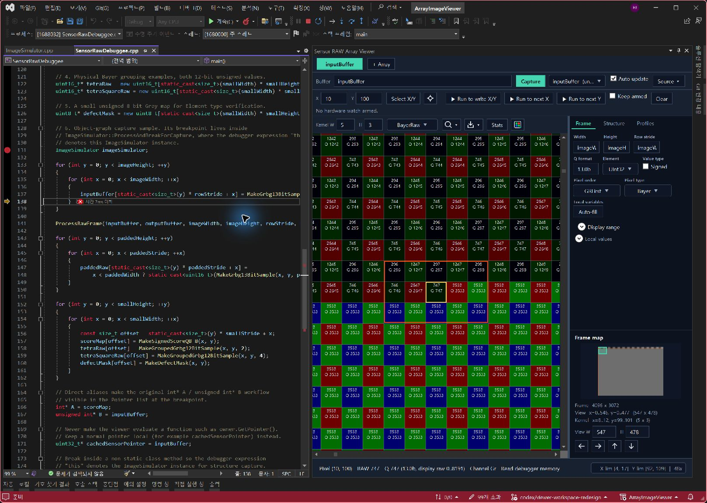
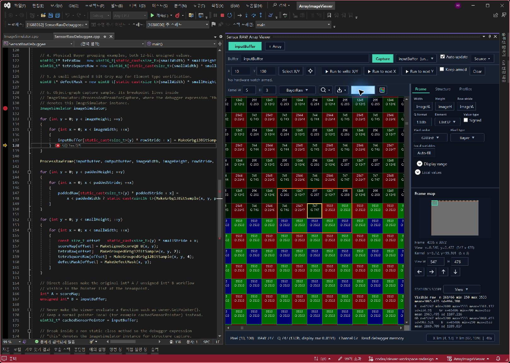
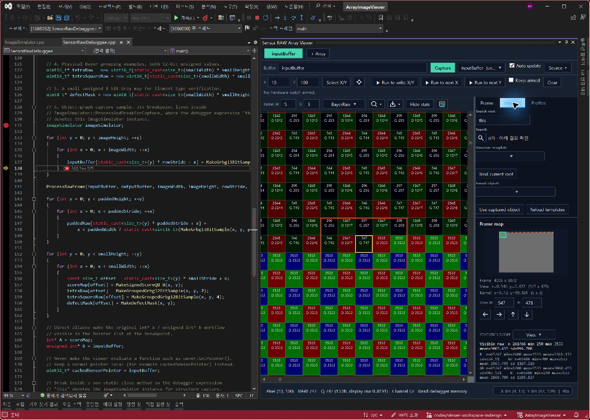
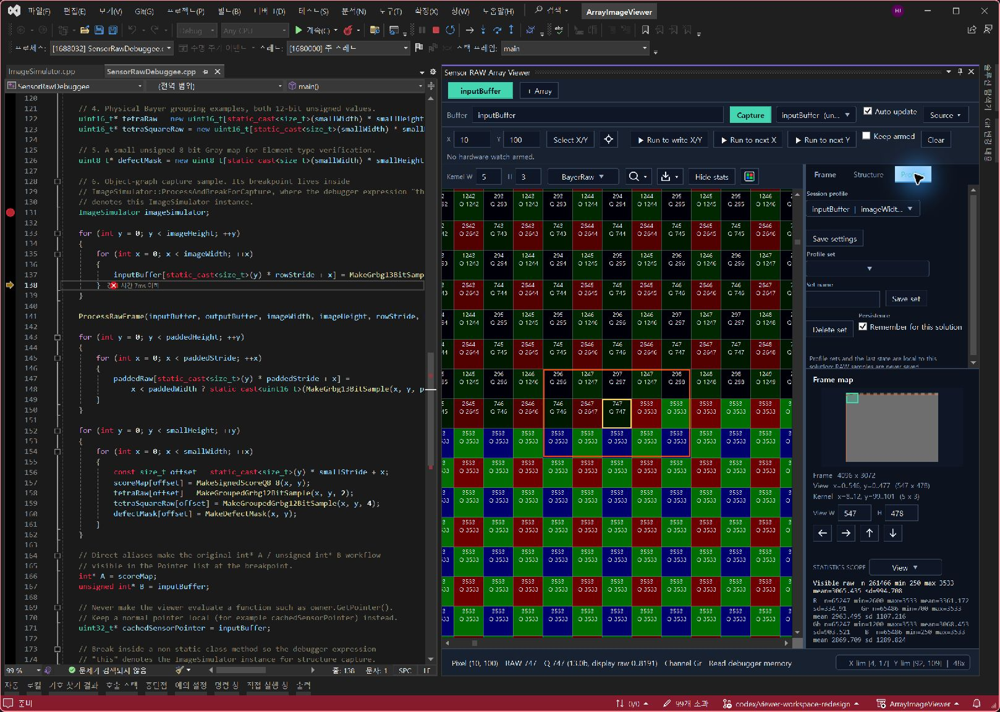
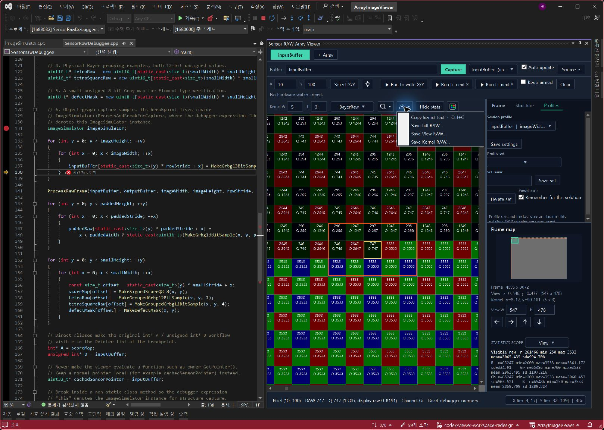

Visual Studio
2017 / 2019 / 2022
일반 설치본 하나로 세 버전을 지원합니다.
ArrayImageViewer.vsix ↓VISUAL STUDIO EXTENSION · RUN TO WRITE
Visual Studio용 디버거 확장입니다.
코드 옆에서 RAW 배열을 이미지로 보고,
Run to write X/Y로 원하는 픽셀 주소의
쓰기를 감시해 디버거를 중단합니다.
Visual Studio 2017 · 2019 · 2022 / 2015 전용 설치본

CORE FEATURE / RUN TO WRITE
선택한 출력 버퍼의 X/Y 입력란에 500, 500을 입력하고 Run to write X/Y를 누르세요. 네이티브 데이터 중단점을 설정하고 실행을 재개합니다. 해당 픽셀 주소에 쓰기가 발생하면 멈추고, 뷰어도 그 위치를 중앙에 표시합니다.
화면만 이동하는 기능이 아닙니다.
Select X/Y는 픽셀을 선택하고 Center view는 화면을 중앙으로 옮깁니다. Run to write는 디버거를 실행하고 메모리 쓰기에서 중단합니다. 과거 프레임이나 모든 픽셀을 순차 검색하는 방식은 아닙니다.
(x, y)지정한 픽셀의 다음 쓰기까지 실행
(x + 1, y)다음 가로 픽셀을 감시하고 실행. 줄 끝에서는 (0, y + 1)로 진행
(x, y + 1)X는 유지하고 다음 세로 픽셀을 감시하며 실행
먼저 포인터·Width·Height·stride를 올바르게 설정하세요. 기본은 한 번 적중한 뒤 자동 해제이며, Keep armed로 유지하거나 Clear로 제거합니다. ROI 전체가 아닌 한 픽셀을 감시합니다. 앞으로 해당 주소에 쓰기가 있어야 하며, 다른 중단점이 먼저 적중할 수 있습니다. 이미 지나간 쓰기를 되돌려 찾지는 않습니다.
포인터 설정부터 시작하기 →GET STARTED
사용 중인 Visual Studio에 맞는 VSIX를 선택하세요.
일반 설치본 하나로 세 버전을 지원합니다.
ArrayImageViewer.vsix ↓VS 2015에는 별도 호환 설치본을 사용하세요.
VS 2015 전용 VSIX ↓Visual Studio를 종료하고 VSIX를 실행한 뒤 다시 엽니다.
포인터와 크기 변수를 읽을 수 있는 네이티브 C++ 스택 프레임에서 멈춥니다.
Tools → Sensor RAW Array Viewer를 엽니다. 포인터 선택 후 우클릭 메뉴로도 열 수 있습니다.
0.11.72 · Watch X/Y 반복 시 중단점 해제 처리를 개선하고, 전역 구조체 템플릿과 저장 즉시 반영을 추가했습니다. 릴리즈 노트 ↗
THE WORKFLOW
이미지는 왼쪽에 크게, Frame / Structure / Profiles는 오른쪽에.
가운데 세로 구분선을 좌우로 드래그해 너비를 조정하세요. 별도 설정 창을 띄울 필요가 없습니다.
상단 Buffer 입력란에 inputBuffer 또는 this->m_data를 입력합니다. Frame에서 Width, Height, stride, 자료형과 Q-format을 지정하고 Capture합니다.
X/Y 입력 후 Select X/Y로 픽셀을 선택하세요. 휠로 확대하면 RAW와 Q 값이 셀 안에 보입니다. Center view나 더블클릭으로 픽셀을 화면 중앙에 둡니다.
Run to write X/Y는 디버거 실행을 재개해 그 픽셀의 쓰기를 기다립니다. 적중하면 해당 좌표를 중앙에 표시합니다.
TWO ROIS, TWO PURPOSES
View ROI는 읽고 표시할 데이터 범위입니다. Kernel ROI는 선택 픽셀 주변의 검사 사각형입니다. 하나를 바꿔도 다른 하나의 크기를 바꾸지 않습니다.
Frame map을 드래그하면 View ROI를 지정합니다. 큰 선택은 262,144샘플 한도에 맞춰 비율을 유지하며 축소합니다. 읽지 않은 영역은 별도 색으로 구분합니다.
INSIDE THE VIEWER / CAPTURED IN 0.11.71
Visual Studio 2022에서 촬영한 v0.11.71 화면입니다. v0.11.72의 전역 템플릿 옵션은 아래 사용법을 참고하세요.
아래는 뷰어 영역을 확대해 보여줍니다. 클릭하면 코드가 포함된 전체 원본이 열립니다. 픽셀 값과 UI는 합성하지 않았습니다.
4096×3072 입력 버퍼의 일부를 확대했습니다. 노란 테두리는 선택 픽셀, 주황색 사각형은 Kernel ROI입니다. 오른쪽 Frame에서 해석 설정을 바꾸고, 그 아래 Frame map으로 전체 위치를 확인하세요.
이동·ROI 조작법 →
이미지 위 Stats 버튼을 누르면 오른쪽에 통계가 나타납니다. View 범위의 전체 집계와 R·Gr·Gb·B 채널별 집계를 함께 보여줍니다. N은 샘플 수, SD는 표준편차입니다. Hide stats로 닫아도 이미지 높이는 바뀌지 않습니다.
Q-format·채널 알아보기 →
Tools → Options에서 타입의 데이터·폭·높이 경로를 등록하고, Structure에서 실제 루트를 지정하세요. main에서는 imageSimulator, 인스턴스 메서드에서는 this를 사용합니다. 사진은 설정 위치를 보여주는 검색 전 화면이며, 성공한 검색 결과를 나타내지는 않습니다.
타입 등록·JSON 예제 →
크기·ROI 설정을 준비한 뒤 Set name과 Save set으로 저장합니다. Remember for this solution을 켜면 같은 솔루션에서 설정을 이어 쓸 수 있습니다. 위쪽 + Array는 다른 입력을 별도 탭으로 비교할 때 사용하세요.
탭과 설정 재사용 →
이미지 위 내보내기 아이콘을 누르면 전체 프레임·View ROI·Kernel ROI 저장을 선택할 수 있습니다. Kernel 값은 Ctrl+C로 공백·줄바꿈 텍스트를 복사하세요. 사진에서는 메뉴만 열었고 파일은 저장하지 않았습니다.
복사·RAW 저장 →RAW, NOT JUST A PICTURE
일반 정수형 8/16/32-bit 포인터를 지원합니다. OpenCV 타입은 필요하지 않습니다.
표시값은 raw / 2⁸. 저장 자료형과 유효 Q 비트 수를 구분하고, 기본 색 범위는 Q-format의 표현 가능 범위를 사용합니다.
Pixel order는 GRFirst, RFirst, BFirst, GBFirst. Pixel type은 각 사이트를 1×1, 2×2, 4×4로 반복합니다.
전체 프레임 좌표 기준으로 위상을 계산하므로 ROI 이동에도 Bayer 사이트를 유지합니다.
센서 RAW는 BayerRaw, loss·score map은 Gray로. R, G, Gr, Gb, B를 분리해서 확인할 수 있습니다.
Stats는 필요할 때만 열어 N, min, max, mean, SD와 채널별 통계를 확인합니다.
stride는 바이트가 아니라 샘플 수입니다. 기본값은 Width를 따르며, 패딩이 있으면 실제 행 간격을 입력하세요. 패딩은 이미지에서 제외됩니다.
BRING YOUR FRAMEWORK
구조체의 멤버 경로만 등록하면 포인터·폭·높이를 함께 바인딩합니다.
Tools → Options → Array RAW Viewer → Structure Templates에서 Global (all solutions) 또는 Current solution (overrides) 범위를 선택하고 Add template로 추가합니다. Save 또는 확인으로 저장하면 Viewer에 바로 반영됩니다. 같은 클래스는 솔루션 정의가 전역 정의보다 우선합니다.
Structure 탭의 Search root에 this 또는 imageSimulator를 입력하고 Search 돋보기 아이콘을 누릅니다. 후보를 선택한 뒤 Use captured object로 적용합니다.
루트 자체가 등록 타입이면 Bind current root를 사용하세요. stride는 바인딩된 Width로 설정됩니다.
{
"FormatVersion": 1,
"Templates": [
{
"ClassName": "ImageStream",
"DataAccess": "m_data",
"WidthAccess": "m_width",
"HeightAccess": "m_height"
}
]
}다른 PC나 팀에는 JSON을 공유하고 Options의 Import JSON → Save로 적용하세요. 여러 타입은 Templates 배열에 추가합니다.
에이전트에는 이 규격의 JSON 생성을 요청하세요. 내부 structure-templates-v1.txt는 전역·솔루션별 항목이 함께 있는 내부 저장 형식입니다. 외부 스크립트로 편집했다면 Reload templates로 다시 읽으세요.
0.11.72 · Watch X/Y 반복 시 중단점 해제 처리를 개선하고, 전역 구조체 템플릿과 저장 즉시 반영을 추가했습니다. 릴리즈 노트 ↗
COMPARE & TAKE IT WITH YOU
입력·출력을 별도 탭으로 열어 비교합니다. 탭마다 해석 설정, 마지막 읽기 결과, 확대·이동 상태를 유지합니다.
같은 솔루션에서 설정을 다시 쓰거나, 이미지 크기와 ROI 구성을 이름 있는 Profile set으로 저장합니다. 원본 RAW 버퍼를 자동 저장하지는 않습니다.
Ctrl+C로 Kernel 값을 공백·줄바꿈 텍스트로 복사합니다. 전체 / View / Kernel RAW 저장을 지원하며, 16bit 이하는 16bit, 32bit 이하는 32bit로 저장합니다.
BEFORE YOU ASK
Tools → Options → Array RAW Viewer → Structure Templates에서 Global (all solutions)을 선택해 등록하세요. Current solution (overrides)에는 현재 솔루션의 추가·덮어쓰기 정의만 표시됩니다. 같은 클래스는 솔루션 정의가 우선하고, 그 정의를 삭제하면 전역 정의가 다시 적용됩니다. 다른 PC에는 원하는 범위에서 Export JSON한 파일을 공유하고, 대상 PC에서 범위를 선택한 뒤 Import JSON → Save로 적용하세요.
v0.11.72부터 Enter는 입력 확정만 하고 옵션 창을 닫지 않습니다. Save 또는 확인은 편집한 범위를 저장하고 현재 Visual Studio의 Viewer에 바로 반영합니다. 취소하면 마지막 저장 이후의 편집을 버립니다. 필수 항목 누락·중복 클래스명은 셀과 상태 문구로 표시합니다.
Reload templates는 외부 스크립트나 다른 Visual Studio에서 설정 파일을 수정했을 때 사용하세요. 옵션 저장은 템플릿 정의만 갱신하며, 객체 검색이나 RAW 메모리 읽기를 자동으로 실행하지 않습니다.
이전 Watch의 해제를 확인하지 못해 새 Watch 등록을 보류한 상태입니다. 중단점 창에 하나만 보여도 발생할 수 있으며, 이 메시지만으로 하드웨어 슬롯이 모두 찼다는 뜻은 아닙니다. v0.11.72는 생성한 객체를 보관하고 삭제 요청과 완료 확인을 분리합니다.
최신 버전에서 디버거를 중단한 뒤 Clear를 눌러 상태를 확인하세요. 계속 발생하면 반복해서 X/Y를 누르기보다 전체 오류 문구, VS 버전, 직전 Watch X/Y 순서를 이슈에 남겨 주세요. 주소가 민감하면 가려도 됩니다. 사용자 중단점을 일괄 삭제할 필요는 없습니다. 이전 확장 인스턴스가 남긴 소유권 불명의 중단점은 자동 삭제하지 않습니다.
중단점 검사 22개와 지연 삭제를 흉내 낸 X/Y 교대 50회 테스트, UI·코어 회귀 테스트와 두 설치본 빌드를 확인했습니다. 실제 Visual Studio에서 v0.11.72의 반복 Watch 조작 및 VS 2015 실환경 검증은 아직 수행하지 않았습니다. 검증 범위와 직접 확인하는 방법 ↗
VS 2015는 전용 VSIX, VS 2017/2019/2022는 일반 VSIX를 사용하세요. 일반 설치본은 VS 2022 amd64 대상을 포함합니다. 해결되지 않으면 VS 버전·에디션과 VSIXInstaller 로그를 함께 남겨 주세요.
디버거가 중단 상태인지, 선택한 스택 프레임에서 표현식이 유효한지 확인하세요. 대소문자를 구분하고 멤버는 this->m_width처럼 명시합니다. 포인터 목록은 Source → Refresh pointers로 갱신하며 직접 입력도 가능합니다.
Buffer Expression에서 타이핑하거나 Ctrl+Space를 누릅니다. 0.11.57부터 단순 포커스 복원으로는 팝업을 열지 않습니다. Esc로 닫을 수 있습니다.
앞으로 실행될 코드가 해당 주소에 쓰기를 해야 합니다. 이미 쓰기가 끝났거나 다른 중단점이 먼저 적중하면 원하는 위치에서 바로 멈추지 않습니다. 하드웨어 감시 슬롯은 제한되어 있으며, 포인터 평가·감시 해제·View ROI 갱신에도 시간이 듭니다. 실행 대기 중에는 요청을 중복 등록하지 않습니다.
Source 메뉴의 Full-frame preview를 사용할 수 있습니다. 큰 프레임은 읽기량 확인이 필요하며, 보통은 Frame map과 제한된 View ROI로 시작하는 편이 빠릅니다. 네이티브 메모리 읽기를 지원하지 않는 엔진은 더 작은 표현식 기반 읽기로 제한됩니다.
저장소의 samples/SensorRawDebuggee를 시작 프로젝트로 설정합니다. 4096×3072 input/output, 패딩 버퍼, Q8.8 score map, Tetra 및 ImageSimulator 구조체 예제를 포함합니다. 확장 프로젝트 자체는 클래스 라이브러리이므로 예제와 구분하세요.
WATCH. STOP. INSPECT.